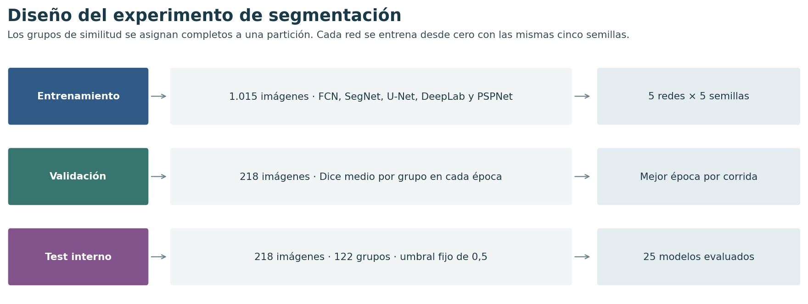

Segmentación de etiquetas de mercancías peligrosas#
Deep Learning · Entregable 1 · Noviembre de 2026
Autores: Luis Perez y Daniel Carbonó
Ver cuántas imágenes hay de cada clase.
¿Con qué precisión se puede delimitar un rótulo de peligro cuando las fotografías relacionadas se mantienen en una misma partición? Comparamos cinco líneas base sobre HAZMAT-13. DeepLab compacta lideró en validación y PSPNet compacta en test. FCN es el comparador de referencia. Cada arquitectura se entrena con las mismas cinco semillas.

Las tres ramas del diagrama tienen funciones distintas. Entrenamiento ajusta los pesos; validación elige qué pesos conservar; test mide el desempeño del checkpoint elegido. Cada grupo de fotos relacionadas sigue una sola rama.
Resumen ejecutivo#
Se compararon cinco arquitecturas de segmentación binaria en HAZMAT-13, entrenadas desde cero con las mismas cinco semillas, Adam a 0,001 y un máximo de 30 épocas. El test contiene 218 imágenes en 122 grupos reservados. Se verificaron las 5.450 evaluaciones imagen–modelo–semilla sobre el mismo manifiesto.
Red |
Dice val. |
Dice test |
DE semillas |
IC 95 % Dice |
IoU |
mIoU |
Parámetros |
|---|---|---|---|---|---|---|---|
PSPNet compacta |
0,8442 |
0,8667 |
0,0078 |
0,8444 a 0,8870 |
0,7851 |
0,8875 |
80401 |
DeepLab compacta |
0,8479 |
0,8612 |
0,0217 |
0,8374 a 0,8837 |
0,7799 |
0,8848 |
104481 |
FCN |
0,8330 |
0,8531 |
0,0063 |
0,8284 a 0,8761 |
0,7673 |
0,8783 |
72145 |
U-Net |
0,8272 |
0,8451 |
0,0135 |
0,8167 a 0,8714 |
0,7612 |
0,8747 |
118273 |
SegNet |
0,8193 |
0,8386 |
0,0353 |
0,8124 a 0,8630 |
0,7504 |
0,8691 |
85761 |
DeepLab compacta obtuvo el mayor Dice medio de validación (0,8479). En test, PSPNet compacta encabeza las cinco redes (0,8667), seguida de DeepLab compacta (0,8612) y FCN (0,8531). Las dos mejoras medias frente a FCN quedan por debajo del margen práctico de 0,02. Los intervalos pareados permiten valorar la incertidumbre alrededor de esas mejoras.
La menor ocupación del rótulo se asocia a menor Dice en los cinco modelos. La revisión sistemática aporta 96 estudios, con tareas y métricas heterogéneas. La justificación de las cinco redes se documenta en Literatura. El efecto del hardware y del perfil numérico limita la comparación de tiempos entre fases.
Los pesos, los historiales y las tablas de resultados se pueden consultar en el archivo de las cinco redes.